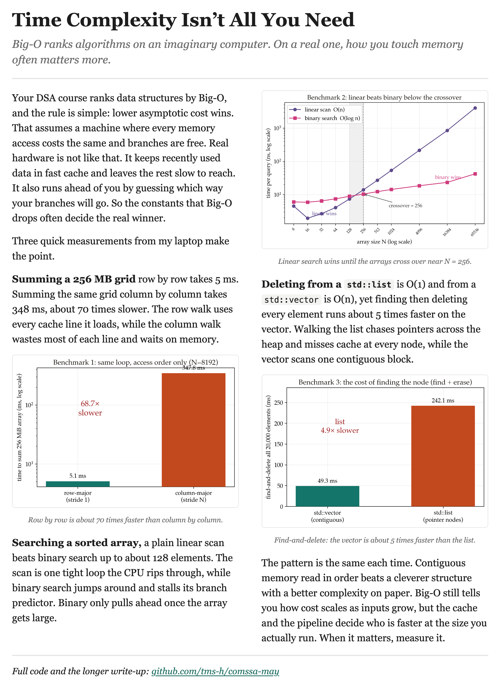

Big-O ranks algorithms on an imaginary computer. On a real one, how you touch memory often matters more.
Three small C++ benchmarks, measured on one laptop, showing where asymptotic
complexity stops predicting real performance: row-major versus column-major
traversal, the linear-versus-binary search crossover, and the
std::list versus std::vector find-and-delete result.
